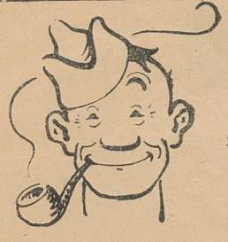
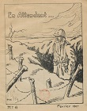
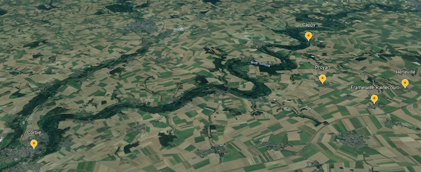
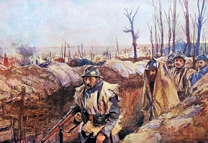
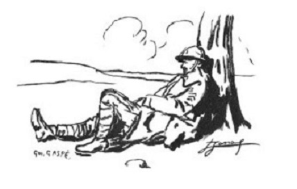
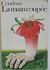

Auguste de retour au front
Avril 1915, c’est au tour d’Auguste de repartir pour le front. Là-bas, les pertes en hommes sont déjà considérables, la ”parenthèse des convois“ ne pouvait durer qu’un temps et il faut envoyer la relève. De convoyeur, Auguste redevient soldat envoyé sur la ligne de feu.
Bien-sûr, la famille est inquiète … un autre des frères est au danger, il en est revenu la première fois, en reviendra t‘il cette fois encore. Ecoutez cette chanson de Léo Ferré créée sur un extrait du poème d’Aragon, La Guerre et ce qui s’ensuivit …
C’est un nouveau régiment qu’Auguste rejoint, un nouveau régiment bâti sur les restes d’autres régiments décimés par les premiers mois de guerre et renforcé par l’arrivée des classes plus jeunes. Ainsi, on mélange les blessés guéris et aguerris par les premiers combats, avec la classe 1915 encore toute fraîche et ignorante de ce qui l’attend. Le 414ème régiment d’infanterie comprend 3 bataillons et 12 compagnies formés par différents dépôts du 14e corps d'armée.
En fait, Auguste a de la chance, il est alors ordonnance d’un lieutenant et à ce titre il rejoindra d’abord la Compagnie Hors Rang du régiment qui comprend notamment l’Etat Major du régiment– en d’autres termes, il n’est pas immédiatement sur la ligne de feu. Il restera dans cette Compagnie jusqu’au 14 Août 1915.
Dans une carte attendrissante et amusante, la cousine Louise prodigue ses conseils à Auguste ...
Cher cousin,
Tu voudras bien m’excuser de ne t’avoir pas écrit plus tôt. Seulement, je n’étais pas chez nous, j’étais à La Villate depuis Jeudi et je ne suis revenu que Mardi.
Tu me dis que tu vas repartir bientôt. Ça ne te fait donc pas de peine de retourner voir ces vilains Allemands. Tu sais, ils sont coquins. Fais bien attention de ne pas te laisser toucher cette fois.
Au moins tu pourras venir nous raconter ta campagne de 1914.
Nous te souhaitons tous de la chance. Ta cousine qui t’embrasse bien affectueusement.
Louise


Et la première carte est pour Augustine ...


Chère filleule,
Je t’envoie ma photo avec mes camarades.
Derrière, tu verras le vieux farceur où nous sommes et son beau château. Je n’ai pas ma capote, c’est ma veste de velours et le képi blanc.
Antoine t’en enverra des plus jolies de Lyon.
Ton parrain qui pense à toi et qui t’aime.
Auguste
Cher cousin,
Un mot seulement pour te remercier de la carte que tu m’as envoyée.
Je l’ai reçue dimanche avec beaucoup de plaisir en apprenant que tu es toujours en bonne santé. Nous aussi, nous allons bien pour le moment.
Tu me dis qu’Auguste est ordonnance d’un officier d’Etat Major et qu’il est à la Valbonne. Je lui ai écrit deux fois. Je n’ai pas eu de réponse, c’est sans doute que mes cartes ne l’ont pas trouvé à Lyon. Enfin, j’espère quand il sera installé à son nouveau poste qu’il nous écrira de nouveau.
Mon frère est toujours à Roanne. Il est venu dimanche pour 24 heures, ça était vite passé mais enfin nous avons eu le bonheur de passer un moment ensemble.
Je termine en t’embrassant bien fort.
Ta cousine Marie


C‘est une période de calme et comme en atteste le Journal de Marche du régiment, les pertes sont minimales jusqu’en Août et dues simplement à quelques « escarmouches » avec les allemands. Auguste décrit ses activités qui paraissent bien routinières mais sont cependant bien rassurantes pour ceux des Raynauds.


Chère filleule,
Je fais réponse à ta belle carte que j’ai reçue hier. Il y a avait déjà longtemps que j’avais pas eu de tes nouvelles.
Hier soir, j’ai reçu 5 lettres, deux de Gabriel, de Chez Chamard et d’Antoine. Il me dit qu’il est définitivement dans l’auxiliaire.
Moi tout va bien, j’ai travaillé ces jours pour installer une nouvelle chambre.
Auguste
Chère sœur,
Je t’écris ce matin ces deux mots pour te dire que j’ai reçu tes lettres. Je vois que vous n’avez pas reçu toutes les miennes. Je vous écrirai tous les deux ou trois jours.
Tu me demandes si j’ai besoin de quelque chose. Ce n’est pas la peine de porter peine de moi, où je suis, je peux trouver tout ce que je veux. Dans mon sac, je me suis acheté tout ce qu’il me faut.
Ici, ce n’est pas aussi bien qu‘à Corbie. Là-bas, je m’ennuyais pas, j’étais bien couché et les gens étaient mieux qu’ici. La sœur de la femme où j’avais couché voulait t’écrire, ils étaient tous bien bon pour les soldats – elle avait ses trois frères au feu.
Auguste


Comme Gabriel, Auguste prend souvent soin d’envoyer une carte à chacune des deux petites jumelles, surtout sur les sujets importants comme le travail des chiens au front …


Chère filleule,
Je t’écris ce soir ces deux mots pour te dire que je suis en très bonne santé.
Hier, comme c’était fête, je suis allé à la messe. Je viens de recevoir une carte de Gabriel, il va bien.
Je t’envoie cette carte pour te faire voir le travail des chiens au 414eme, nous en avons trois.
Ton frère qui t’embrasse bien fort.
Auguste
Chère sœur,
Je t’envoie cette carte pour te montrer le service que font nos chiens à la guerre, au 414eme nous en avons trois.
J’ai été à la messe, ici c’est bien tranquille.
J’ai reçu ta lettre du 8 Mai, je vois que vous vous débrouillez bien. Tu me dis qu’il a fait mauvais temps, ici voilà un mois qu’il fait beau.
J’ai reçu aussi la belle image que tu m’as envoyée.
Ton frère qui t’embrasse bien fort.
Auguste


Ma chère petite Léa,
Tu crois peut-être que je t’ai oubliée, mais ce n’est pas vrai. Je pense à toi et je t’écris ces quelques mots avant d’aller dormir dans mon bon petit lit avec mon copain.
Je suis en très bonne santé. Ce soir, j’ai reçu une lettre de Maria, et le mandat et une carte-lettre du 13. Je vois que vous vous portez tous bien.
J’en ai reçu de Gabriel et d’Antoine. Il est content d’être réformé et de se débarrasser de ce métier. Moi je suis toujours bien tranquille, jamais je suis été aussi heureux.
Aujourd’hui, on n’a pas entendu le canon. Nous sommes toujours dans le même village, à Caix près Rosières Somme. Tu regarderas sur la petite carte que j’ai envoyée. C’est encore loin des boches. Voilà deux jours qu’il fait mauvais temps.
Ma chère petite Léa, je termine en t’embrassant bien fort. Demain, je ferai une plus grande lettre à Maria.
Auguste
Chère Maria,
Ce matin, je pense à toi et je t’écris ces deux mots. Je suis toujours en très bonne santé, je désire que tu en soies de même ainsi que tous.
Depuis quelques jours il fait chaud. Il ne faut pas trop travailler, quand nous seront rentrés, nous travaillerons mieux. Tu diras à la marraine de se reposer aussi, cette année elle doit travailler encore plus que d’habitude et surtout elle doit bien se faire du mauvais sang.
Surtout, tu lui diras de pas s’en faire pour moi. Je suis plus heureux que vous tous. Je vous écris tous les 3 ou 4 jours. J’avais envoyé des cartes, à Léa et à Augustine, des chiens. Tu me diras si elles les ont reçues.
Ton frère Auguste qui t’embrasse bien fort.


Chère sœur,
Je t’écris ces deux mots pour te dire que j’ai reçu ta lettre du 27 ce soir ainsi que le mandat.
Je n’avais pas besoin d’argent, je me soigne bien sans trop de dépenses. Vous avez assez de peine pour le gagner.
J’ai reçu une lettre de Marcel Gidel, je lui ai pas écris, j’ai perdu son adresse. Quand tu m’écriras, tu me la donneras
Il fait tous les jours bien beau, et je me fais toujours pas de bile.
Auguste
S’il fallait le rappeler, se sont tous les hommes jeunes qui sont partis à la guerre. Maria, Marie et les jumelles sont aussi les cousines d’autres soldats … et les soldats s’écrivent entre eux parlant d’autres champs de bataille
Chère cousine Maria,
C’est avec plaisir que j’ai lu les quelques lignes que tu avais écrites dans la lettre de Marie et je vois que ma convalescence passera pas inaperçue. Enfin, pourvu que tu ailles bien et que la guerre finisse au plus tôt … je n’aurais pas crû passer trois mois ici sans voir la fin, mais elle viendra bien un jour.
Le peuple n’a pas trop l’air de se soumettre à la loi de Dieu, car vois-tu il y a encore des quantités qui ne croient pas en lui, mais il viendra un jour où il règlera leur compte aussi.
Je ne reçois rien plus de Tatène. Est-il chez toi ou comment va-t-il ? Tu me le diras car le temps me dure qu’il soit chez vous. J’espère que tes bons parents sont en bonne santé, c’est bien ce qui est l’essential pendant cette année.
Ici, il a fait un temps affreux, tous les jours de l’eau et il fait bien chaud. Ça ne fait que le temps de l’herbe. Gabriel m’a écrit, il ne se plaint pas trop mais le temps doit bien aussi lui durer.
En attendant de tes bonnes nouvelles, reçois petite Maria un bon baiser et un bonjour affectueux à tes chers parents.
Ton cousin. Annet


Mon cher Ami,
Je t’écris ces deux mots pour te donner de mes nouvelles qui sont très bonnes pour le moment et je désire que tu sois de même.
Maintenant, je vais te dire que je ne suis plus au 17eme. Je n’y suis resté que 3 jours à Notre Dame de Lorette, on était en réserve. Mais tu peux croire qu’il n’y fait pas bon, on entend qu’un roulement d’obus.
Enfin moi, j’ai demandé d’aller au bataillon de marche et jusqu’à présent je m’en plains pas. Nous sommes en arrière et nous faisons l’exercise en attendant qu’ils aient besoin de nous pour renforcer. Enfin, je ne demanderais que à rester ici quelques jours.
Tu me diras si Paul est toujours à Nyons, et si tu lui écris, dis lui le bonjour pour moi en attendant que je lui écrive.
Nous sommes en Juin et comme Gabriel, Auguste est inquiet pour ceux de la ferme. C’est la saison des foins et puis ce sera le temps des moissons, que feront les sœurs sans les bras des hommes …
Ma chère filleule,
Tu dois te dire que ton parrain t’oublie. Ce n’est pas vrai, tous les jours je pense à toi.
Je suis toujours en bonne santé. Hier, je vous ai écrit. Le temps ne me dure pas trop, je trouve même que ça passe vite. Je suis très tranquille, je n’ai pas beaucoup à faire. Il fait beau dans le bois, on est au frais.
Chère Augustine, c’est bien embêtant que tu n’aurais pas pu garder Antoine avec toi, il vous aurait aidé et puis il serait mieux qu’à Lyon, malgré que dans l’auxiliaire il ne sera pas trop mal.
Maintenant qu’il fait chaud, il faudra pas trop travailler. Tu es bien forte mais encore trop jeune.
Ton petit parrain qui t’embrasse bien fort et qui pense à toi.
Auguste


Cher frère et parrain,
Je pense à toi ce soir.
Je t’envoie ces quelques lignes pour te remercier de la carte que tu m’as envoyée. Elle est bien belle, je la conserve pour te la montrer bientôt.
Aujourd’hui, je t’envoie ma photo. Ce n’est pas très bien réussi, mais enfin tu seras content de nous voir avec Léa. Tu vois, j’ai grandi, je suis forte à présent.
Antoine est toujours avec nous. Nous en avons envoyé une à Gabriel, hier. Nous sommes tous en parfaite santé. Tu me dis que tu es bien, le temps me dure de voir si tu as engraissé. Je désire que tu conserves ta place et surtout la santé.
Ta petite Augustine qui t’embrasse bien fort.
Augustine
Chère sœur,
Je t’écris deux mots seulement. Je suis toujours en bonne santé et je désire que ma carte te trouvera de même.
Depuis Lundi soir, nous sommes au village. Moi, j’aime mieux être dans mon petit bois. On est à l’ombre et moins de travail.
Vous devez travailler dans les foins, ici il fait beau. Il ne faut pas trop travailler, tu n’es encore pas assez forte.
Ton frère qui t’embrasse.
Auguste


On l’oublie bien souvent, mais les soldats sont jeunes, très jeunes. Ainsi, Auguste va tout juste sur ses 23 ans quand il écrit cette lettre à sa sœur Maria. La lettre est légère, bravache, taquine et presque insouciante comme on écrit les lettres quand on a 23 ans et la vie devant soi …

Chère Maria,
Je réponds à ta lettre du 30 Juin que j’ai reçue ce soir.
Tu me dis que j’ai beaucoup de travail parce que j’avais pas mis l’adresse de la carte de Léa moi-même. C’est le cuisinier qui a fait ça pour rigoler. Tu sais, on devient tellement gosse dans ce métier.
Je voudrais bien que tu n’aies pas plus de travail que moi, tu serais heureuse. Une heure le matin pour faire la chambre et nettoyer les affaires du vieux, après je lave quelques assiettes, je balaye un peu et si je veux bien, je fais quelques commissions.
Hier, j’ai aidé rentrer le foin du patron où nous sommes. Il est très chic, sa vieille aussi. Elle m’a donné un litre de lait, de la salade à volonté.
Chère Maria, voilà le travail que je fais à la guerre, laver les assiettes et balayer les rues.
Chère Maria, j’ai reçu une lettre d’Antoine. Comme je vois, il sera bien au Lycée, il aura bien une autre perme. Il m’a envoyé cinq francs que la Marraine lui avait donné pour moi. Tu la remercieras bien de ma part et surtout tu lui diras de pas tant travailler et de pas se faire de mauvais sang pour moi.
Tu me demandes si j’ai besoin de quelque chose, le linge, l’argent, j’en ai que trop.
Auguste

C’est ce même esprit de camaraderie et de rigolade un peu lourde que l’on retrouve dans les journaux de tranchées. Dès 1915, les journaux de tranchées, écrits dans et pour les tranchées, apparaissent dans différents régiments et servent bien souvent d’antidote à la presse officielle muselée par la censure.
Quelquefois, c’est une simple feuille de papier avec des textes écrits à la main et des dessins griffonnés au fuseau. Mais la qualité des textes est toujours au rendez-vous, car il faut dire, qu’au front, il y a pléthore de journalistes, écrivains, poètes et autres scribouilleurs en tout genre.
Les textes sont frais, francs et sans filtre et on n’y épargne, ni le boche, ni l’embusqué, ni le haut gradé restant bien en arrière. Mais par-dessus tout, c’est plein d’humour … avec le quart de pinard, ce sont sans doute ces journaux qui soutiennent le moral des troupes.
Voici un extrait du journal « En Attendant », une histoire courte écrite par Pierre Vergez, un affichiste-humoriste célèbre de l’époque. C’est les pieds nickelés avant l’heure et c’est gouailleux comme un après-midi d’automne dans les tranchées de la Somme …
LE MOT HISTORIQUE
_ N’empêche, déclara Poulot, en balançant une boîte de conserves vide par-dessus le parapet de la tranchée, n’empêche que les Poilus, les vrais, ceux-là qui dégotent , les plus poilus des poilus, c’est ceux-là qui, en mourant, doivent lâcher une phrase, vous envoyer un bobard rigolo ou patriotique, quelque chose de court et de tapé …
_¬ Un mot historique, quoi ! trancha Vertemousque, qui avait des lettres.

Cette conversation pourtant banale produisit une impression énorme sur Chignole, dit Chichi, occupé pour l’instant à s’humecter le gosier d’un vague pinard. Un brusque réflexe secoua la peau de bouc gonflée qu’il tenait élevée au bout de ses longs bras ; et la trajectoire du liquide vermeil vint s’éparpiller, en l’inondant, sur toute sa large face, soudain attentive.
Dès l’instant, ledit Chignole, dit Chichi parut sombre, absorbé, soucieux. Lui, d’ordinaire si enjoué, si recherché des copains pour sa verve sans cesse en éveil, pour son inépuisable répertoire de calembours et de chansons, il devint clos, silencieux, hermétique. La corvée de soupe, qu’il égayait de coutume par ses boniments, cessa de ressembler á un joyeux monôme pour prendre des allures de convoi funèbre ; et les marmites boches purent siffler et éclater tout á leur aise, sans être saluées par ses habituels lazzis.
Taciturne, le casque sur les yeux, le front barré, la pite basse, il allait, mâchonnant des paroles inintelligibles, désintéressé du service et des copains. Même, Poulot le surprit une nuit, pendant sa veille, faisant de mystérieuses confidences à son créneau.
_ Chignole devient loufoque, ma parole, confia-t-‘il aux camarades. Le v’là, à c’te heure, qui dégoise tout seul !
_ Chichi, prononça Vertemousque, qui avait des lettres, y a simplement qu’il fait de la neurasthénie.
Or, Vertemousque et Poulot se foutaient tout bonnement le doigt dans l’œil. La vérité vraie, c’est que Chignole, dit Chichi … cherchait sont mot historique.
Un matin – enfin ! – il apparut radieux à l’entrée de la guitoune, la face baignée de joie, toute son âme Gavroche aux lèvres.
Une ovation tumultueuse l’accueillit :
_ Ah ! la bonne heure ! Chignole ! Voilà comment qu’on t’aime ! …. Vive Chichi ! …. Demandez la résurrection de Chichi !
Enfin ! Il le tenait son MOT HISTORIQUE ! Ah ! Ç’avait été long et pénible. Mais enfin, il le tenait : lorsque, à l’attaque, la marmite ou la grenade fatales viendraient disloquer son académie poilue, de toutes ses forces il gueulerait, comme à l’auberge, lorsqu’un verre se brise : Boum ! Faites chauffer la colle !
Evidemment, cela ne cassait rien. Mais, tout de même, cela avait de l’allure, C’était gai, c’était enlevé. Cela ferait rigoler les copains en leur donnant du cœur au ventre. Et puis, cela ne ferait pas mal du tout dans les journaux.
Naturellement, tous les gars de l’escouade voulurent savoir. Tous en furent pour leur frais.
_ Rien à faire, les petits ! Plus souvent que j’irais vous le dire mon Mot, pour que vous alliez me le chiper, n’est-ce pas ? Pour le connaître, faudra attendre que Chichi y soye amoché, et sérieusement, encore. In-estrémisse comme dit le curé du patelin. Avant ça, des nèfles, les aminches.
Une reconnaissance a été décidée hier et organisée. Un vieil entonnoir se creuse à 50 mètres de la tranchée, entre les deux lignes. Il fallait savoir si les Boches l’occupent. On a demandé des volontaires à la Compagnie. L’escouade entière s’est faite inscrire. Du moment que Chichi en était, tout le monde a marché. Les plus peureux ont confiance aux côtés de ce grand escogriffe qui n’a peur de rien. Et puis, ce Chignole, chacun le considère comme un porte-veine.
Seulement l’affaire n’a pas marché aussi bien que l’on escomptait. Malgré les précautions prises, malgré la nuit sans lune, l’ennemi a éventé le petit groupe, éparpillé, rampant. Vingt fusées l’ont rapidement signalé, tapi, sans souffle, aux guetteurs boches attentifs. Une rafale de 77 s’est amenée, précise et drue, faisant de la mort dans du noir.
Quatre ne sont pas revenus. Chichi est du nombre. Dans la guitoune, les rescapés, atterrés ou rageurs, pleurent le camarade dont la verve gavroche et l’entrain les ont si souvent réconfortés. _ A les salauds ! ne cesse de répéter Poulot, le poing dans un geste de menace.
Puis soudain : _ A propos, dites-donc, ce pauvre Chichi, il l’a pas dit, tout de même, son MOT ! …
Puis soudain : _ A propos, dites-donc, ce pauvre Chichi, il l’a pas dit, tout de même, son MOT ! …
_ Il l’a dit, proteste Vertemousque, d’un air pincé. Même que c’était pas la peine vraiment de se torturer le ciboulot comme il l’a fait, pendant une semaine, pour n’accoucher que de çà. Si i se figure qu’on peut mettre ça dans les journaux !...
_ Dis le quand-même, va, Vertemousque, implora Poulot puisque Chichi il est défunt à c’te heure.
Et Vertemousque, qui avait des lettres , révéla le MOT qui, lui, n’en avait que cinq.


Extraits - Journal de Tranchées - VERGEZ
Pour découvrir plus de détails sur les lettres et les croquis de Pierre Vergez, visitez-donc le site suivant
En Savoir Plus
Par ailleurs, vous pouvez consulter l’intégralité des journaux de tranchées dans la partie RESSOURCES de ce site … cela vaut le détour !


Pour Auguste, la période d’accalmie continue, ponctuée par les cartes avec ses sœurs, et celles reçues d’autres soldats. On parle de saucisson, d’espoir de permission et de jours meilleurs avec les petites demoiselles …


Cher frère,
Nous venons de lire ce soir ta gentille lettre du 1er Juillet.
Nous sommes contents d’avoir la photo de ce petit, il a l’air trop mignon. Tu remercieras ton lieutenant de nous l’avoir envoyée. C’est un beau souvenir, nous sommes tous été contents de regarder ce bambin. Quelle tenue il a pour son âge.
Cher Auguste, nous voyons que tu es bien nourri, cela nous console un peu. Surtout que tu es avec de bonnes gens. Tu bois du lait, ça te fera du bien. Nous serions bien contents de voir ta photo avec tes camarades.
Moi je lui ferai prendre à Annet pour te l’envoyer et à Gabriel.
Nous sommes tous en bonne santé, je désire que tu sois pareil. Je termine en t’embrassant.
Ta sœur. Maria
Meilleures amitiés.
Merci pour l’envoi de mes lettres.


Cher frère,
Je t’écris ce soir samedi pour te dire que nous t’envoyons un petit colis, des petits beurres, du saucisson..
J’ai mis dans la boîte de biscuits, des pastilles Vichy. J’espère qu’elles ne fondront pas. Si tu as besoin de quelque chose, dis-nous le toujours.
Comme tu parles de permission, ton tour sera bientôt. Nous serons trop content de te voir quelques jours. Nous attendons tous les jours la lettre nous apprenant ton arrivée. Surtout, tu nous le fera dire.
Nous irons t’attendre en gare.
Tiens, voilà encore une jolie petite demoiselle.
Je crois qu’il y en a deux. T’en donneras une à Polyte, parce que si bien toi, comme lui et moi, cela nous ferait tant plaisir ce petit monde.
Surtout celles la, elles ne sont pas vilaines et on peut les embrasser comme des médailles. Elles ne bougent pas plus que si elles étaient de bois.


Nous sommes en Août, les foins et les moissons se sont bien passés, et Auguste va même recevoir sa part de brioche … mais déjà, on sent les prémices des temps plus difficiles à venir, les soldats ne sont plus autorisés à cacheter leurs lettres … vont-ils aller à la bataille à nouveau ?...


Chère petite Léa,
Je t’écris deux mots pour te dire que je suis toujours en très bonne santé et je désire que ma carte te trouvera comme elle me quitte.
J’ai reçu une carte de Gabriel, il est cuisinier. Il a trouvé un bon poste, il sera mieux que creuser des galeries.
Vous avez du beaucoup travailler pour faire les foins et les moissons. Vous avez de l’avance maintenant, vous serez plus tranquille, vous pourrez un peu vous reposer.
Chère petite Léa, je suis toujours assez heureux. Je trouve pas le temps trop long mais je voudrais bien que ça finisse pour aller te revoir. Tu embrasseras bien fort la marraine et le tonton pour moi. Alexandre des Cros est parti ce matin, nous pour le moment nous restons ici.
Ton frère qui t’aime et pense à toi. Auguste
A partir du 10 Aout, on ne pourra pas cacheter les lettres, j’écrirai des cartes. Je t’envoie des petites fleurs.
Cher frère,
Je t’écris ce soir, la veille de l’anniversaire que tu as été blessé.
La cousine de Muratel a fait une brioche pour toi. Ils battent à la batteuse aujourd’hui. Si elle est un peu sèche, tu la feras chauffer à la cuisine.
Elle a été heureuse de penser à vous, à Gabriel ainsi qu’à Antoine.
Nous ne savons pas encore quand nous battrons. Cellier n’est pas venu. Antoine ne sait encore rien au sujet de sa demande. Nous allons tous bien, je désire que tu sois pareil.
Je termine en t’embrassant.
Maria


La lettre à Léa du 8 Août est la dernière écrite par Auguste à cette époque et pour cause. Il quittte la Compagnie Hors rang du régiment le 14 Août pour rejoindre la 3ème Compagnie du 1er Bataillon … en d’autres termes il se retrouve dans les tranchées de première ligne.
Jusqu’à présent, comme Aragon l’écrit si bien, il a glissé le long de la ligne de feu mais cette période de relative insouciance et confort arrive à sa fin. Plus beaucoup de temps pour envoyer des cartes, et sous le feu des marmites allemandes, sans doute le cœur y est-il moins pour envoyer des nouvelles rassurantes.

Le soldat est souvent plus bavard quand il est en cantonnement et que sa vie reprend un semblant de normalité, mais le temps des tranchées revenu, il est plus difficile de mentir et décrire son quotidien ne ferait qu’alarmer davantage la famille au village. Il en va de même avec Auguste.
De fin Juillet à fin Août, Auguste est dans les tranchées à Cappy sur les bords de la Somme. Peut-être a-t’il alors croisé, au détour d’un boyau, le célèbre écrivain et aventurier Blaise Cendrars qui se trouve dans le secteur de la Grenouillère, à deux pas de Cappy.
Certes les deux hommes sont bien différents ; Auguste est soldat par nécessité et devoir, Cendrars lui est engagé volontaire dans la Légion et attiré par l’aventure. Mais ils font tous deux face à la même réalité et vivent la même expérience.
Lire La Main Coupée de Blaise Cendrars, c’est donc lire ce qu’Auguste n’écrit pas à la famille, la monotonie morbide et industrielle de cette guerre de tranchées, l’horreur qui surgit subitement au milieu d’une belle matinée d’été …
… L'on restait quatre jours en ligne et l’on redescendait pour quatre jours à l'arrière, et l’on remontait à l'avant pour quatre jours, et ainsi de suite jusqu'à la fin s'il devait jamais ÿ avoir une fin à cette triste histoire. Les poilus étaient découragés. Ce va-et-vient était bien Îa plus grande saloperie de cette guerre, et la plus démoralisatrice, et il ne manquait qu’une sirène à l'entrée des boyaux — une sirène et une horloge et un système de contrôle à poinçon qui leur aurait délivré une fiche et un petit portillon de fer à fermeture automatique — pour rappeler aux pauvres bougres leur boulot à l’usine, sans rien dire des blessés qui croyaient en être quittes et qui remontaient, et qui remettaient ça, à l’usine de la mort, une fois, deux fois, trois fois quatre jours en première ligne, quatre jours dans les cantonnements de l’arrière.

Ces cantonnements étaient la deuxième grande saloperie de cette guerre. Il y avait de quoi vous foutre le cafard. On logeait dans des granges déglinguées. On couchait sur de la paille pourrie dans laquelle les hommes enfouissaient non pas jeurs pauvres guibolles esquintées, mais ces saucissons de Chicago qui schlinguaient, qu’on appelait de « la viande électrique » car aussitôt portée à la bouche elle vous soulevait le cœur (c'était instantané!) et dont les rats se régalaient comme de bonne merde. Mais plus fumiers que les rats qui empestaient nos cantonnements étaient nos gradés à l’arrière. On ne voyait qu'eux!
Nous autres, on serait bien restés jusqu’à la fin de la guerre à La Grenouillère, tellement on y était pépère ; mais quand on descendait, on ne savait jamais si l’on allait y remonter, et cela c'était bien la troisième grande saloperie de cette guerre que de ne jamais savoir si l’on reverrait le coin tranquille que vaille que vaille on s'était aménagé, et même dans le secteur le plus chahuté, les cagnas que l’on avait construites avec tant de peines, le peu de confort que l’on avait pu se procurer à ses risques et périls, la tranchée que l’on avait mise en état avec tant de travail, de courage, de constance, d’entêtement exténuant car il avait fallu s’y reprendre des centaines et des milliers de fois, écrasés sous les rondins, les bobines, de barbelés, les poutres, les plaques de blindage ou les feuilles de tôle ondulée, les fardeaux de toute sortes, les corvées de munitions, et la défendant plus souvent avec la pelle, avec la pioche qu’à coups de fusil. Ces souffrances étaient sans grandeur. Tout cela manquait de gloire.
Mais j'ai connu plus d’un type qui finissait par chérir son créneau, même s’il y était planté tout l’hiver dans l’eau et jusqu’au ventre, car c'était là le seul coin de cette terre aimée de France qu'il posséderait jamais en propre, et qu'il était venu défendre, ce trou d’homme qui le moulait, qui avait fini par épouser sa forme tellement il s'y était accoudé, adossé, frotté par devant et par derrière durant ses heures de veille épuisante et de cafard, et même si dans la journée son horizon était bouché par la trogne d’un macchabée ou borné par le créneau d'en face, ce trou d’homme qui s’éboulait en revêtant le soldat d’un uniforme de boue et où, à chaque relève, l’un ou l’autre restait enseveli comme dans une chiotte sans issue, douce France, Ô mon beau tombeau!...
...Tilloloy. C'était le bon coin, A part les obusiers qui tapaient sur Beuvraignes à midi, il ne s’y passait jamais rien. J’en ai gardé le souvenir d’une robinsonnade, la plupart d’entre nous ayant construit des huttes de feuillage et les autres dressé les tentes, les Boches se trouvant au diable vauvert, quelque part, au fond de la plaine, du côté de Roye.
Par une belle matinée du mois de juin, nous étions assis dans l’herbe qui envahissait notre parapet et cachait nos barbelés et qu'il allait falloir faucher et faner, nous étions assis dans l’herbe haute, devisant paisiblement en attendant la soupe et comparant les mérites du nouveau cuistot à ceux de Garnéro que nous avions perdu à la crête de Vimy, quand, tout à coup, cet idiot de Faval bondit sur ses pieds, tendit le bras droit l'index pointé, détourna la tête la main gauche sur les yeux et se mit à pousser des cris lugubres comme un chien qui hurle à la mort :
_ Oh, oh, regardez!... Quelle horreur!...Oh, oh, oh!...
Nous avions bondi et regardions avec stupeur, à trois pas de Faval, planté dans l’herbe comme une grande fleur épanouie, un lys rouge, un bras humain tout ruisselant de sang, un bras droit sectionné au-dessus du coude et dont la main encore vivante fouissait le sol des doigts comme pour y prendre racine et dont la tige sanglante se balançait doucement avant de tenir son équilibre.
D'instinct nous levâmes la tête, inspectant le ciel pour y chercher un aéroplane. Nous ne comprenions pas. Le ciel était vide. D'où venait cette main coupée ? Il n’y avait pas eu un coup de canon de la matinée. Alors, nous secouâmes Faval, Les hommes devenaient fous.
— … Parle, espèce d’idiot! D'où vient cette main? Qu'est-ce que tu as vu?
Mais Faval ne savait rien.
— … Je l’ai vue tomber du ciel, bredouillait-il en sanglotant les mains sur les yeux et claquant des dents. Elle s’est posée sur nos barbelés et a sauté à terre comme un oiseau. J’ai d’abord cru que c'était un pigeon. J’ai peur. Quelle horreur!...
ll n'y avait pas eu un avion de Îa matinée, pas un coup de canon, pas une explosion proche ou lointaine. Le ciel était tendre, Le soleil, doux, L’herbe printanière, pleine d'’abeilles et de papillon. Ii ne s'était rien passé. Nous ne comprenions pas.
À qui était cette main, ce bras droit, ce sang qui coulait comme la sève?

— À la soupe ! cria le nouveau cuistot qui s’amenait hilare avec sa marmite fumante, ses boules emmanchées, ses gamelles, ses boites de conserve, son pinard,
— Ta gueule, salaud! lui répondit-on.
Et les hommes se dispersèrent et pour la première fois depuis que nous étions dans ce secteur où il ne se passait jamais rien, ils allèrent se tasser dans les abris, descendirent se mettre sous terre.
Il faisait beau. Le plus beau jour de l’année. Seul Faval sanglotait dans l'herbe chaude, secoué de spasmes.
Des mouches bleues vinrent se poser sur cette main. Jamais nous n’eûmes la clef de l’énigme.

Extraits - La main coupée - Blaise CENDRARS
Par un hasard de l’histoire, la petite et la grande, après avoir séjourné non loin d’Auguste, Blaise Cendrars rejoind Tilloloy, à proximité du Bois des Loges, le secteur où se trouve Gabriel durant l’année 1915.
Pour découvrir la vie incroyable de Cendrars, cliquez sur le lien suivant :
En Savoir Plus

Jusque-là, et comme en témoigne le journal de marche du 414eme régiment d’infanterie, c’est la guerre ordinaire, chaque jour amenant son lot de tués et blessés dans des normes sans doute considérées raisonnables par l’ Etat Major. Mais les évènements vont s’accélérer à partir de Septembre.
Le 21 Septembre, le premier bataillon est relevé par les troupes anglaises et va à Villiers-Bretonneux pour embarquer un train, direction Conteville. Bivouac à Neuvilette, puis direction Barly et participation à l’attaque de tranchées allemandes dans le secteur de Warlus (à l’ouest d’Arras) dès le 25 Septembre. Le lendemain, le régiment est transféré sur Villers au Bois dans le secteur de Notre Dame de Lorette (à proximité de Lens).

Commence alors une période particulièrement éprouvante pour les hommes du 414ème qui sont au cœur de la troisième bataille d’Artois. Et, avec la précision diaboliquement administrative des journaux de marche, le décompte des morts et des blessés s’accélère … T pour tués, B pour blessés, D pour disparus …
Dès le 27 Septembre, le 414ème reçoit l’ordre d’occuper les tranchées du plateau de Lorette. Bombardement ennemi intense le 30 Septembre, dans le secteur du bataillon d’Auguste qui se trouve en première ligne (5 tués, 1 disparu, 20 blessés).
Le régiment est en cantonnement jusqu’au 19 Octobre dans le secteur de Souchez, puis retourne au front dans ce même secteur. Combat féroce jusqu’au 26 Octobre, encore 42 tués et 213 blessés dans le bataillon d’Auguste. Au total, au cours du mois d’Octobre, sur les 1016 hommes qui constituent le premier bataillon, on compte 63 tués et 281 blessés, soit un tiers de l’effectif !
La bataille de Notre Dame de Lorette dure jusqu’à la fin Novembre, le régiment va ensuite dans le secteur du Grand-Servins puis est transféré par automobiles à Valhuon.
De là, grand mouvement par train le 3 Décembre jusqu’à Genevreuille en Haute Sâone. Cantonnement de repos à Vy-les-Lures à partir du 5 Décembre jusqu’au 10 Janvier 1916. De mi à fin Janvier, exercices d’entraînement au camp de Raon-Basse non loin d’Epinal, puis mouvement à nouveau jusqu’à Chavanatte toujours dans les Vosges. Le régiment reste dans le secteur, en première ligne pendant le mois de Février, puis période de cantonnement à partir de mi-Mars à Réchésy, puis retour en première ligne.
Le 3 Avril, départ en train de Plancher-Bas pour Révigny dans la région de Bar-le-Duc, puis mouvement sur Watronville dans le secteur de Verdun le 23 Avril.